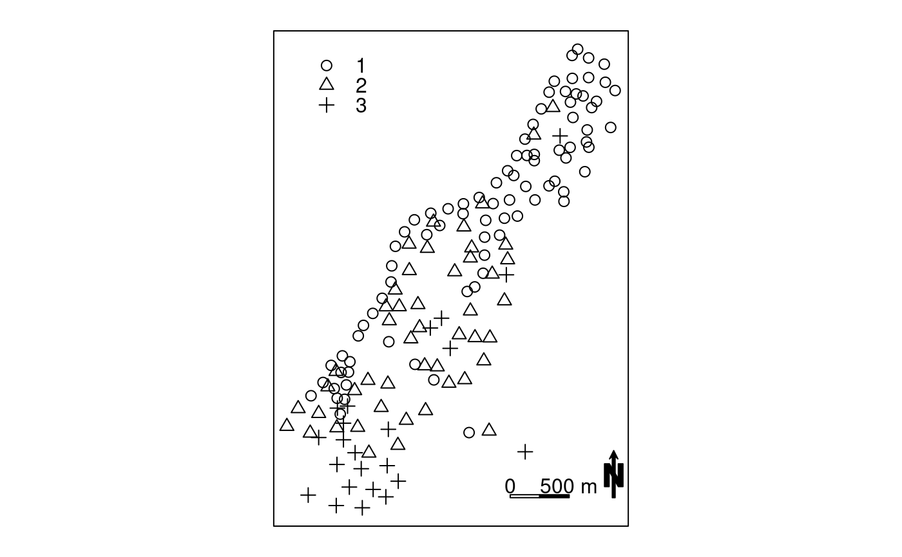
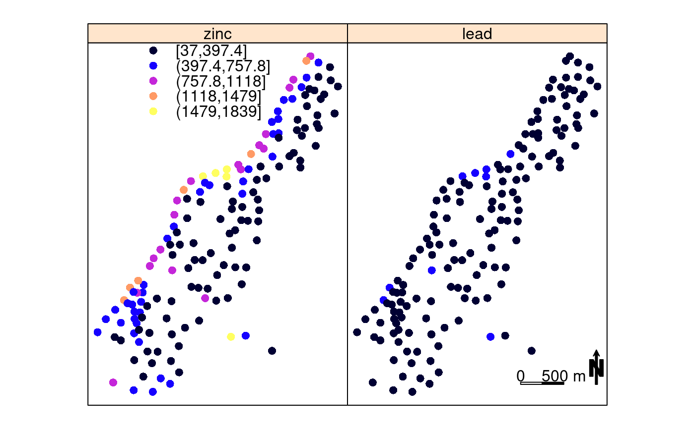
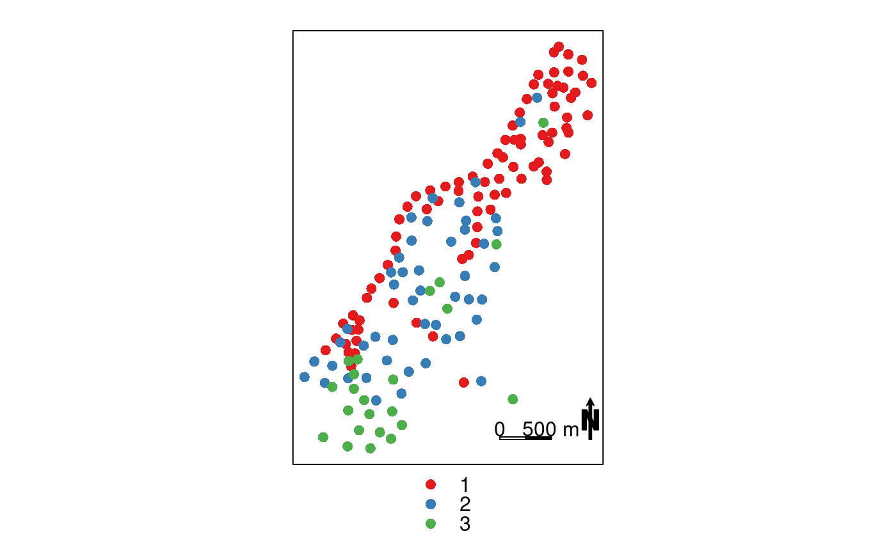
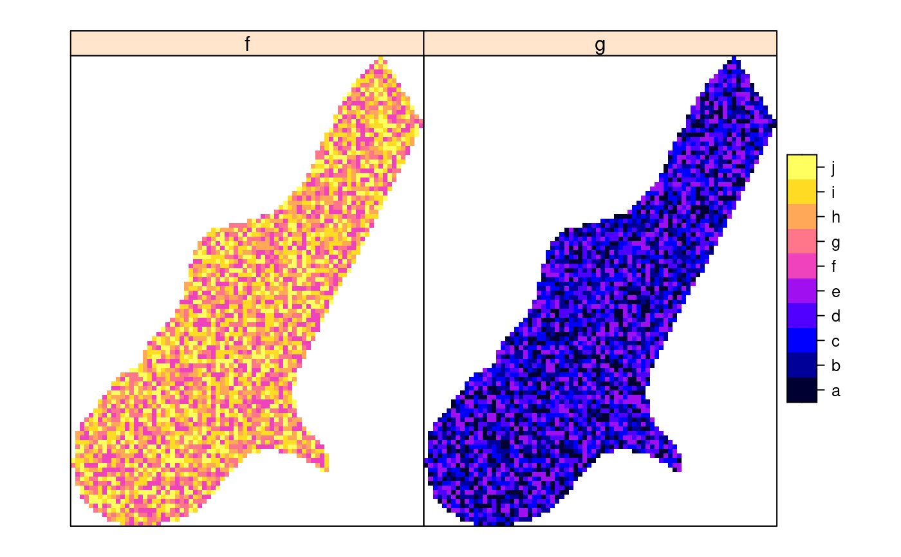
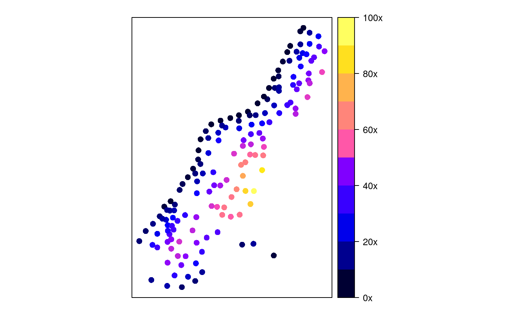
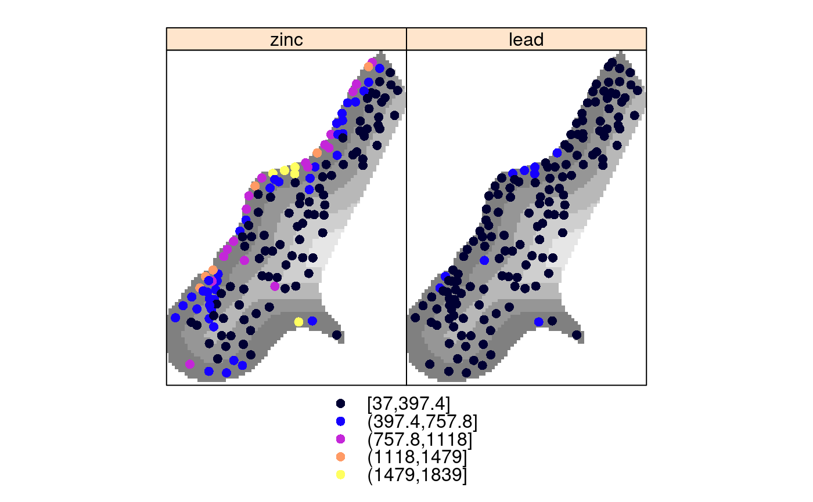
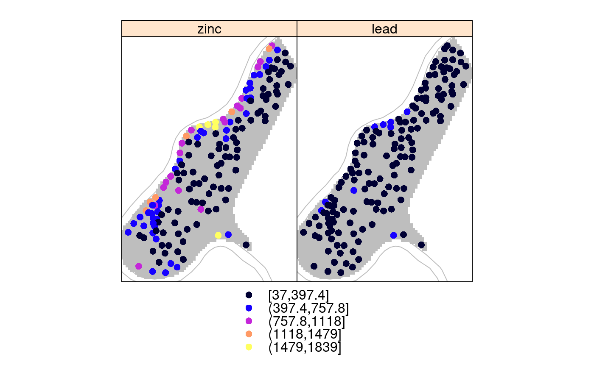
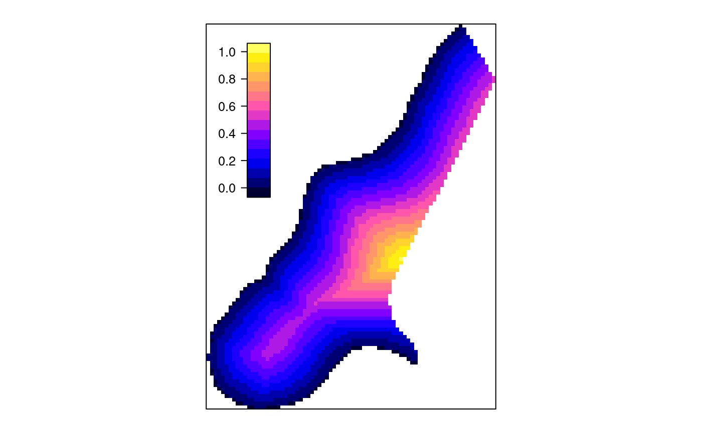

Plot methods for spatial data with attributes
spplot.RdLattice (trellis) plot methods for spatial data with attributes
spplot(obj, ...) spplot.grid(obj, zcol = names(obj), ..., names.attr, scales = list(draw = FALSE), xlab = NULL, ylab = NULL, aspect = mapasp(obj,xlim,ylim), panel = panel.gridplot, sp.layout = NULL, formula, xlim = bbox(obj)[1, ], ylim = bbox(obj)[2, ], checkEmptyRC = TRUE, col.regions = get_col_regions()) spplot.polygons(obj, zcol = names(obj), ..., names.attr, scales = list(draw = FALSE), xlab = NULL, ylab = NULL, aspect = mapasp(obj,xlim,ylim), panel = panel.polygonsplot, sp.layout = NULL, formula, xlim = bbox(obj)[1, ], ylim = bbox(obj)[2, ], col.regions = get_col_regions()) spplot.points(obj, zcol = names(obj), ..., names.attr, scales = list(draw = FALSE), xlab = NULL, ylab = NULL, aspect = mapasp(obj,xlim,ylim), panel = panel.pointsplot, sp.layout = NULL, identify = FALSE, formula, xlim = bbexpand(bbox(obj)[1, ], 0.04), ylim = bbexpand(bbox(obj)[2, ], 0.04), edge.col = "transparent", colorkey = FALSE, col.regions = get_col_regions()) mapLegendGrob(obj, widths = unit(1, "cm"), heights = unit(1, "cm"), fill = "black", just = "right") sp.theme(set = FALSE, regions = list(col = bpy.colors(100)), ...) layout.north.arrow(type = 1) layout.scale.bar(height = 0.05) spplot.locator(n = 512, type = "n", ...) set_col_regions(value) get_col_regions()
Arguments
| obj | object of class extending Spatial-class |
|---|---|
| zcol | character; attribute name(s) or column number(s) in attribute table |
| names.attr | names to use in panel, if different from zcol names |
| scales | scales argument to be passed to Lattice plots; use
|
| ... | other arguments passed to levelplot (grids, polygons) or xyplot (points) |
| xlab | label for x-axis |
| ylab | label for y-axis |
| aspect | aspect ratio for spatial axes; defaults to "iso" (one unit on the x-axis equals one unit on the y-axis) but may be set to more suitable values if the data are e.g. if coordinates are latitude/longitude |
| panel | depending on the class of obj, panel.polygonsplot (for
polygons or lines), panel.gridplot (grids) or panel.pointsplot
(points) is used; for further control custom panel functions can be
supplied that call one of these panel functions, but do read below how the
argument |
| sp.layout | NULL or list; see notes below |
| identify | if not FALSE, identify plotted objects (currently only working
for points plots). Labels for identification are the row.names of the
attribute table |
| formula | optional; may be useful to plot a transformed value. Defaults
to |
| xlim | numeric; x-axis limits |
| ylim | numeric; y-axis limits |
| edge.col | color of symbol edge |
| colorkey | if FALSE, use symbol key; if TRUE, use continuous, levelplot-like colorkey; if list, follow syntax of argument |
| widths | width of grob |
| heights | heights of grob |
| fill | fill color of grob |
| just | grob placement justification |
| set | logical; if TRUE, trellis.par.set is called, else a list is returned that can be passed to trellis.par.set() |
| regions | color ramp for the theme |
| height | height of scale bar; width is 1.0 |
| n | see locator |
| type | see locator |
| checkEmptyRC | logical; if TRUE, a check is done to see if empty rows or columns are present, and need to be taken care of. Setting to FALSE may improve speed. |
| col.regions | vector with fill colours; in case the variable to be plotted is a factor, this vector should have length equal to the number of factor levels |
| value | vector with color values, default for |
Value
spplot returns a lattice plot of class "trellis", if you fail to "see" it,
explicitly call print(spplot(...)). If identify is TRUE,
the plot is plotted and the return value is a vector with row names of
the selected points.
spplot.locator returns a matrix with identified point locations;
use trellis.focus first to focus on a given panel.
get_col_regions returns the default value for col.regions
Methods
see spplot
see spplot
see spplot
see spplot
see spplot
Note
Missing values in the attributes are (currently) not allowed.
spplot.grid, spplot.polygons and spplot.points are S4
methods for spplot; see spplot-methods.
Useful arguments that can be passed as ... are:
layoutinteger; for the layout of panels (cols,rows)
prettylogical; choose colour breaks at pretty numbers?
atspecify at which values colours change
as.tablelogical; start drawing panels upper-left instead of lower-left
pageto add marks to each plotted page
for useful values see the appropriate documentation of xyplot (in case of points), and levelplot (otherwise).
If obj is of SpatialPointsDataFrame, the following options are
useful to pass:
key.spacecharacter: "bottom", "right", "left" or "right" to denote key location, or list: see argument key in the help for xyplot what the options are
legendEntriescharacter; array with key legend (text) entries; suitable defaults obtained from data
cutsnumber of cuts, or, for objects of class SpatialPointsDataFrame only, the actual cuts to use
do.loglogical; if TRUE use log-linear scale to divide range in equal cuts,
else use a linear scale if cuts is only number of cuts
pchinteger; plotting character to use; defaults to 16 if fill is TRUE, else 1
cexnumeric; character expansion, proportional to default value of 1
filllogical; use filled circles?
layout.north.arrow and layout.scale.bar can be used
to set a north arrow or scale bar.
The sp.layout argument is either a single layout item, or a list
with one or more layout items. A layout item is one of
a list with one or more
Spatial*objects, along with style arguments likecol,lty,pch,filletc.a list with its first argument the layout function or the name of the layout function to be called:
sp.pointsfor SpatialPoints,sp.polygonsfor SpatialPolygons object,sp.linesfor a SpatialLines object, andsp.textfor text to place. The second argument contains the object (or text) to be plotted; remaining arguments are passed to the correspondingpanel.*functions.
The order of items in sp.layout matters; objects are drawn in the
order they appear. With respect to obj, default plot order and
precedence of sp.layout items is as follows: for points and
lines, sp.layout items are drawn over (after) obj; for
grids and polygons, sp.layout items are drawn behind (before)
obj. Transparency may further help making multiple things
visible. Adding a first argument to a layout item overrides its
default plotting order with respect to obj:
Special control elements of sp.layout items:
firstlogical; should the layout item be drawn before
the obj (TRUE), or after (FALSE)? This overrides
the default order (points and lines in front, polygons and grids behind).
whichinteger; controls to which panel a layout
item should be added. If which is present in the main,
top-level list it applies to all layout items; in sub-lists with
layout items it denotes the (set of) panel(s) in which the layout
item should be drawn. Without a which item, layout items
are drawn in each panel.
sp.theme returns a lattice theme; use, after loading package
lattice, the command trellis.par.set(sp.theme())
after a device is opened or changed to make this work. Currently, this only
sets the colors to bpy.colors.
If the attributes to be plotted are of type factor, spplot tries to create a legend that reflects this. In this case, the color ramp passed needs to be of the same length as the number of factor levels. The factor levels are derived from the first map; subsequent factors with different factor levels result in an error.
References
See also
xyplot, levelplot, panel.identify to identify objects
Examples
library(lattice) trellis.par.set(sp.theme()) # sets bpy.colors() ramp demo(meuse, ask = FALSE, echo = FALSE)#> Warning: Discarded datum Amersfoort in CRS definitionl2 = list("SpatialPolygonsRescale", layout.north.arrow(), offset = c(181300,329800), scale = 400) l3 = list("SpatialPolygonsRescale", layout.scale.bar(), offset = c(180500,329800), scale = 500, fill=c("transparent","black")) l4 = list("sp.text", c(180500,329900), "0") l5 = list("sp.text", c(181000,329900), "500 m") spplot(meuse, c("ffreq"), sp.layout=list(l2,l3,l4,l5), col.regions= "black", pch=c(1,2,3), key.space=list(x=0.1,y=.95,corner=c(0,1)))spplot(meuse, c("zinc", "lead"), sp.layout=list(l2,l3,l4,l5, which = 2), key.space=list(x=0.1,y=.95,corner=c(0,1)))# plotting factors: meuse$f = factor(sample(letters[6:10], 155, replace=TRUE),levels=letters[1:10]) meuse$g = factor(sample(letters[1:5], 155, replace=TRUE),levels=letters[1:10]) spplot(meuse, c("f","g"), col.regions=bpy.colors(10))if (require(RColorBrewer)) { spplot(meuse, c("ffreq"), sp.layout=list(l2,l3,l4,l5), col.regions=brewer.pal(3, "Set1")) }#>meuse.grid$g = factor(sample(letters[1:5], 3103, replace=TRUE), levels=letters[1:10]) meuse.grid$f = factor(sample(letters[6:10], 3103, replace=TRUE), levels=letters[1:10]) spplot(meuse.grid, c("f","g"), col.regions=bpy.colors(10))# example modifying colorkey for points: spplot(meuse["dist"], colorkey = list( right = list( # see ?levelplot in package trellis, argument colorkey: fun = draw.colorkey, args = list( key = list( at = seq(0, 1, .1), # colour breaks col = bpy.colors(11), # colours labels = list( at = c(0, .2, .4, .6, .8, 1), labels = c("0x", "20x", "40x", "60x", "80x", "100x") ) ) ) ) ))l6 = list(meuse.grid["dist"], col = grey(seq(.5,.9,length.out=10))) spplot(meuse, c("zinc", "lead"), sp.layout = l6)# Custom legend placement, taken from # http://stackoverflow.com/questions/29344692/custom-placement-of-spplot-legend-in-the-map s <- spplot(meuse.grid[,'dist'], colorkey = list(space = "left", height = 0.4)) args <- s$legend$left$args$key ## Prepare list of arguments needed by `legend=` argument (as described in ?xyplot) library(lattice) # draw.colorkey legendArgs <- list(fun = draw.colorkey, args = list(key = args), corner = c(0.05,.75)) ## Call spplot() again, this time passing in to legend the arguments ## needed to print a color key spplot(meuse.grid[,'dist'], colorkey = FALSE, legend = list(inside = legendArgs))